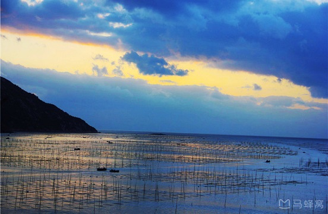
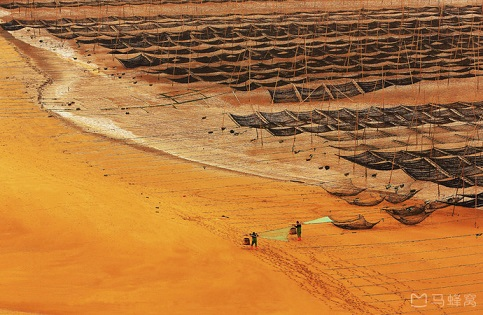
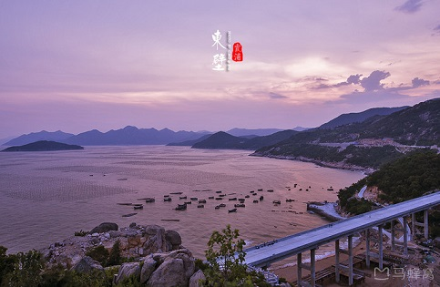
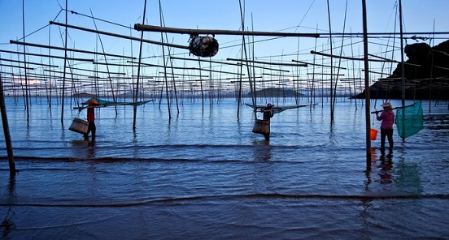

morly旅游圈
当你的目光在中国版图逡巡，眼观落到海峡西岸的福宁湾，这就是让海内外影友趋之若鹜的霞浦海域。霞浦海域为基岩海岸，岬角突出，岸线曲折蜿蜒，曲线面积400多公里，滩涂面积696平方公里。在漫长的岁月长河中，经过无数次的潮起潮落，形成了自己独特的景观。这里四季的潮汐变化、天光云影、原生态的海事活动，让美丽神奇的海域瞬间迥异奇妙无比。那诡谲神秘的满海竿影，那梦幻般的海上家园，那鸥鸟掠过浪尖扑腾滩涂，那金色沙滩褐色礁丛，那港湾远空的一抹红云束光，海上日出日落……都是那样灵动令奇绝。
霞浦，位于福建 省宁德市，依山面海，是中国著名的“海带之乡”、“紫菜之乡”，同时号称全国十大摄影基地之一。漫长的海岸线、浅海和沙质细腻的滩涂，不仅为海上种植提供了得天独厚的自然条件，也为摄影提供了不可多得的独特风景。霞浦最迷人的就是壮美的滩涂景观，潮汐之间，滩涂裸露，每个季节，每个时刻的滩涂都会呈现出不同的风韵和景致。
去霞浦拍片一年四季什么时候都行，只是景色各有不同而已。夏天多台风，但风云滚滚、巨浪滔天的景象也很值得一拍；秋冬季不算很冷，且干燥少雨，更容易赶上晴好的天气。 霞浦是一个纯粹的摄影点，而不是旅游点，如果是来旅游的，那么你可能会失望的，如果你钟情于摄影，那么这里的光影变化会让你着迷的。
霞浦有四条最经典的摄影线：东线、西线、北线、南线，其中南线又可分为两条线路。在这里为大家推荐的是东线。东线：小皓、北岐、东壁、花竹、三沙渔港、大嵛山岛；其拍摄亮点：东壁日落、花竹日出、沙质滩涂、虎皮滩、竿影。
【小皓海滩】
小皓海滩是滩涂风光最经典的拍摄点之一。距霞浦约18公里。小皓滩涂是任何季节早晚都能进行拍摄创作的滩涂。只要有光线，这个滩涂就是变化万千的创作基地。小皓适合拍日落，日落的时候，水面的光影非常不错！
最佳拍摄点:
小皓左右两边都有座山，这2座山都有拍摄的制高点，沿981县道穿小皓村而过后的一条路边小道爬上山头，在高高的山崖边拍摄壮阔的海景，和脚底下的小皓村。
【北岐滩涂】
北岐滩涂是拍摄霞浦滩涂最精彩的一个拍摄点，距城关只有五公里。最有名的是虎皮样的滩涂斑纹（冬季不是很明显）和满滩满海的竿影、人影和船影。涨潮时海上忙碌的船只穿梭在浮标竿影（紫菜架）之间，与大海、远山、岛屿浑然一体，蔚为壮观。退潮时海滩的纹理渐显秀质，劳作的渔民游动在虎皮滩上，使得这片滩涂更具韵律美和动态美。
最佳拍摄点：
北岐的拍摄点位于高高的山崖边，视野十分开阔，紧挨着脚下的山崖就是滩涂和紫菜架。
【东壁】
东壁位于小皓往三沙方向两公里处，路边有留云寺。滩头沃口，一条弯弯曲曲的水道沙滩，小溪流从中穿过，冲刷出一片复杂多变的纹理，柔美的线条在落日余晖照射下呈现出不同暖色调和蓝色调的对比色。下午四点到东壁，抢占位置，几乎是每人占据一块礁石。日落后可以留下等待柔和的余光。等天光暗下来，水里的金色架子更漂亮，更明显。橙色的天，金色的海，场景让人震撼。
最佳拍摄地点：
东壁村路边有一座天主教堂，从教堂后的小路上翻山头而过，即可见一条从乱石堆中踩出的小土路，可一路下到海边。
【花竹】
到花竹村33.7公里。经三沙供电所往北盘山而上，行至花竹村附近。近景浮标竹竿、中景鱼排木屋、远景岛屿帆影，整个场景井然有序，乃一处绝佳好境。花竹还是观赏“福瑶列岛”全景的最佳地点，尤其以日出最为壮美，散射光照下，变幻莫测的色彩。若适逢云雾漂浮之日，海面上云蒸雾涌、轻盈柔美。福瑶列岛若隐若现，犹如海市蜃楼。
最佳拍摄点：
穿三沙镇而过后，在路边国家电网的岔路上向北盘山而上，在乡间小路上一块《花竹等村景点分布图》的牌子处，有一条小路向山坡下翻去，即可见一条小路在乱石堆中蜿蜒，向下直到半山腰一块巨石上。可以从高处眺望大海， 抢好位置（一定要早）。远处有几个小岛，近处有滩涂养殖，中景有个月亮型的鱼排，日出的太阳正好能收入画面中。
【大嵛山岛】
从三沙古镇码头坐轮船到大嵛山岛约半小时。因拥有“海上天湖、南国天山”而被评为中国最美的十个岛屿之一；大小嵛山岛沿岸因被海水冲刷风化、基石裸露、礁石林立，构成奇特的景观；鸟岛栖息着成千上万只海鸥和其他候鸟，乍然飞起，十分壮观。进入岛谷中心，岛中大小天湖绿水荡漾，周围群山环绕，形似天池。岛上还有妈祖宫、天福寺等古迹。
门票：80元（包含岛上交通）
注意：大嵛山岛的游览时间以2-3天为宜，如时间较紧，可以不选择这里进行拍摄。
内容整理至网络，如有侵权，请联系我们！1255394075@qq.com
   